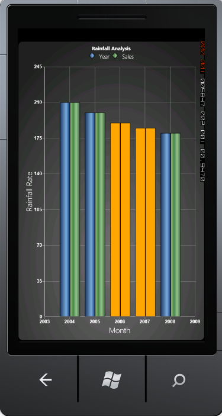

Essential chart Windows Phone supports Empty point.
The data collection that is passed to the chart may have Not-A-Number (NaN) values, this is empty points.
You can also turn on or off empty point’s visibility.
Basic chart types such as Column Type, Bar Type, Line Type, Scatter Type and Stacking Column Type are now enhanced with this support.
If data points bounded with chart does not give any value, then chart renders empty points in chart series.
This feature is useful when you are not able to get the exact value for a particular data.
e.g. In population analysis, if you do not get the result for the previous years, then we can use Empty data value.
List of Property
The following table consists of the Property details.
|
Name of the Property |
Description |
Type Of Property |
Value It Accepts |
|
ShowEmptyPoints |
Enable/Disable Empty points feature. |
|
Bool |
|
EmptyPointInterior |
Specifies the color for empty points. |
|
Brushes |
|
EmptyPointStyle |
Specify the style for Empty point. There are options: Symbol Interior SymbolandInterior |
|
EmptyPointStyle |
Customizing EmptyPointStyle
EmptyPointStyle has the following three options during initialization:
· Symbol - The color of empty points is considered as a series color and draws a symbol shape.
· Interior - The segment rendering color is initialized in the EmptyPointInterior property.
· Symbol and Interior - Draw a symbol shape with color, as initialized in EmptyPointInterior property.
The following code illustrates how to add Empty Point to basic chart.
|
[Xaml]
<syncfusion:ChartSeries x:Name="series" Label="Series1" ShowEmptyPoints="True" EmptyPointStyle="Interior" EmptyPointInterior="Orange" Type="Line"> </syncfusion:ChartSeries> |
|
[C#]
chart.Areas[0].Series[0].ShowEmptyPoints = true; chart.Areas[0].Series[0].EmptyPointStyle = EmptyPointStyle.Interior; chart.Areas[0].Series[0].EmptyPointInterior = new SolidColorBrush(Colors.Orange); |

Figure 72 : EmptyPointStyle As Interior
The code illustrates how to add customizable Tooltip for chart in C#.